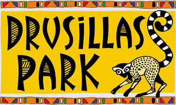

Trade Mark Journal No.2025/025 20 June 2025
UK00004213659 4 June 2025 (16,25,28,41,42)

- Class 16
- Printed matter and publications, including texts, books and journals in respect of animals, animal protection and conservation of wildlife and the natural world; printed picture books; stationery products including pens, pencils, crayons, rubbers and rulers.
- Class 25
- Clothing; footwear; headgear; T-shirts; hoodies; caps.
- Class 28
- Toys, games and playthings; toy animals; stuffed toys and dolls; board games; jigsaws.
- Class 41
- Zoological gardens and parks; animal training; amusement parks; entertainment services in the form of visitor attractions; education information and education services, including such services provided online; writing of texts including texts relating to animals, animal protection and conservation of wildlife and the natural world; publication of books and journals and publication of electronic books and journals and online broadcasts, including in connection with animals, animal protection and conservation of wildlife and the natural world; arranging and conducting of conferences, congresses, seminars and symposiums, events events, exhibitions and education and training.
- Class 42
- Scientific research services including but not limited to research in the field of animal breeding, animal protection and conservation of wildlife and the natural world.
Drusillas Zoo Park Ltd
Representative: Agile IP LLP